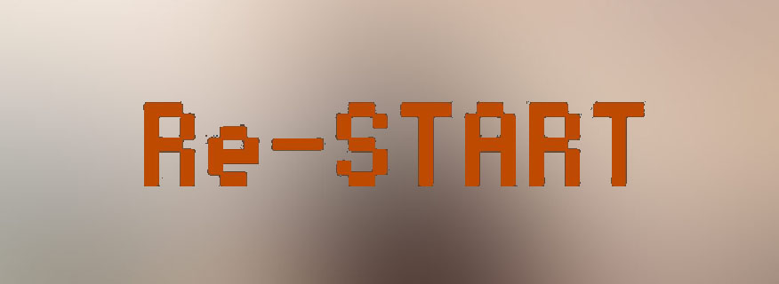
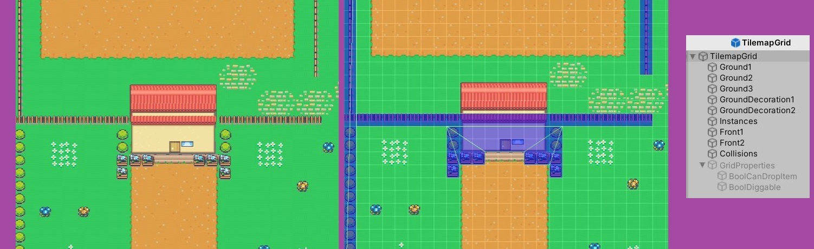

Project Loose Screw
An open world, 2D farming game. Dictionaries and events are the corner stone
of this project, as well as deeveloping a time system, which counts
minutes, hours, days, seasons, and years.
The World
The Unity Tilemap has been used to build the world map of the game. In the project, classification layers have been used to order and build the different features of the map. From these layers, the Tilemap has been used to define certain properties of the Grid, with the use of scripts and Booleans, which allow certain actions to be carried out in certain parts of the world.
Time and the harvest
The plants are connected with the time system, with the passing of the days each plant passes in cycles.
Dictionaries
Dictionaries are one of the corner stones in this project. Unlike an array or list, it is considered unordered, and is accessed by a "key" rather than an "index," which makes it easier to work with and access objects. If you were managing the objects as a list or as an array, every time you wanted to get a reference to an object, you would have to "loop" through each item in the list until you find the one that matches. With a dictionary, you can basically say, "give me the item named 'Such' and immediately get its reference.